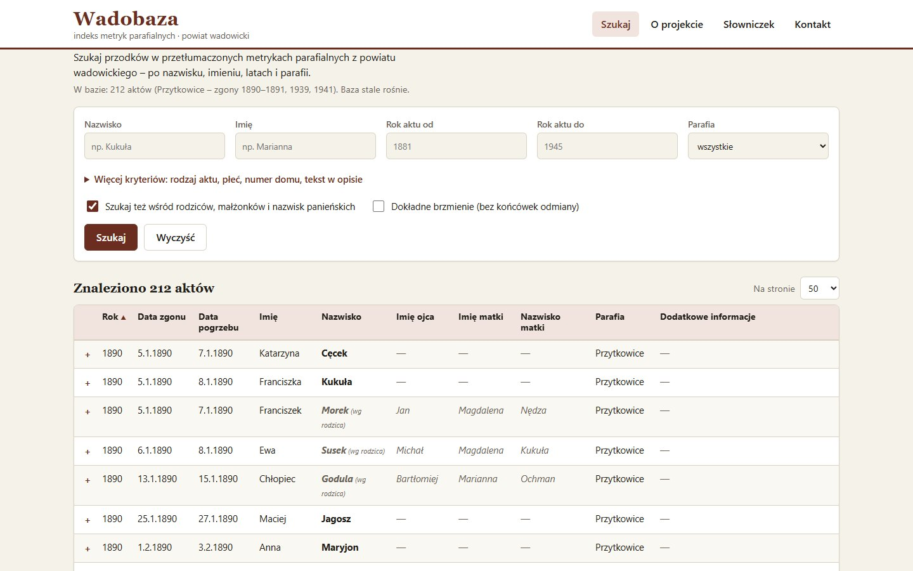

Wadobaza
Indeks przetłumaczonych metryk parafialnych z powiatu wadowickiego. Akty zgonów spisane po łacinie w XIX wieku można przeszukać po polsku: po nazwisku, imieniu, latach i parafii.

Działająca strona z prawdziwymi danymi. Na start: Przytkowice, zgony.
Jak to działa
Tłumaczenie
Każdy rocznik księgi to arkusz Excela: data zgonu i pogrzebu, numer domu, zmarły, rodzice, małżonek, wiek, przyczyna zgonu, ksiądz.
Sprawdzenie
Skrypt czyta arkusze po nagłówkach kolumn i pilnuje błędów: niemożliwe daty, brak nazwiska, rekordy do poprawy. Na końcu pokazuje raport.
Granice publikacji
Na stronę trafiają tylko akty do 1945 roku, a urodzenia do 1926. Pliki Excela zostają na dysku, publiczne są wyłącznie wygenerowane dane.
Wyszukiwarka
Działa w przeglądarce, bez serwera i bez kont. Szuka też wśród rodziców, małżonków i nazwisk panieńskich rozumie odmianę nazwisk (Kukuła, Kukuły, Kukułowa) i wpisywanie bez polskich znaków.
Szczegóły aktu
Każdy akt rozwija się w pełny opis z rodzicami i uwagami oraz linkiem do zdjęcia oryginalnej księgi, żeby zawsze dało się sprawdzić tłumaczenie.
Słowniczek
Objaśnienia dawnych słów z ksiąg: stany chłopskie (kmieć, zagrodnik, komornik), choroby jako przyczyny zgonu, łacińskie formuły księży.
Dane do kolejnych roczników przygotowują Tartak i Weryfikacja: tną skany na pojedyncze akty i pomagają sprawdzić odczyt łaciny.